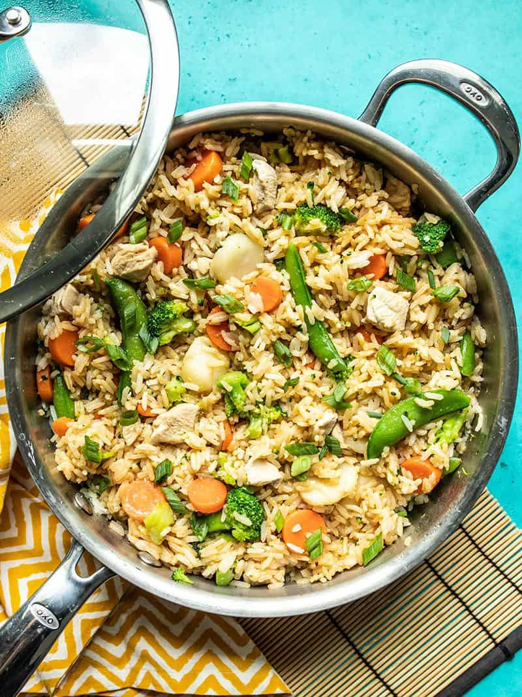

Teriyaki Chicken and Rice

This One Pot Teriyaki Chicken and Rice is an easy and satisfying
meal that the whole family will love. It also meal preps well for
lunches all week!
Ingredients
- 1 boneless, skinless chicken breast (about 2/3 lb.)
- 1 Tbsp cooking oil
- 2 cloves garlic, minced
- 1 tsp grated fresh ginger
- 1.5 cups uncooked jasmine rice
- 2.5 cups water
- 12 oz. frozen stir fry vegetables
- 1/4 cup soy sauce
- 2 Tbsp brown sugar
- 1 tsp toasted sesame oil
- 2 green onions, sliced
Steps
- Cut the chicken breast into very small pieces, about 1/2 to
3/4-inch in size.
- Add the cooking oil, garlic, and ginger to a large, deep skillet.
Cook over medium heat for about 1 minute, then add the chicken
pieces and continue to sauté just until the outside of the chicken
is no longer pink. Do not over cook the chicken here, it will
finish cooking with the rice.
- Add the uncooked rice to the skillet and continue to sauté for 1-2
minutes more. You should hear the rice popping. Finally, add the
water and give everything a brief stir to make sure there is no
rice stuck to the bottom of the skillet.
- Place a lid on the skillet, turn the heat up to medium-high, and
allow the water to come to a full boil. Once boiling, turn the heat
down to low and let it simmer for 10 minutes.
- While the skillet is simmering over low, prepare the teriyaki sauce.
In a small bowl, stir together the soy sauce, brown sugar, and
toasted sesame oil. The brown sugar may not fully dissolve, but
that's okay. Set the sauce aside.
- After the rice has simmered for 10 minutes, lift the lid briefly to
sprinkle the frozen vegetables on top, then replace the lid
immediately. Make sure the vegetables are spread evenly over the
surface. Let the skillet continue to heat over low for an additional
five minute.
- After steaming the rice and vegetables together for 5 minutes, turn
the heat off and let the skillet rest with the lid in place for an
additional five minutes.
- Give the teriyaki sauce another brief stir, lift the lid on the
skillet, and drizzle the sauce over the vegetables. Make sure to
scrape out all the sugar from the bottom of the bowl. Using a spatula
or large spoon, gently fold the rice and vegetables together until
everything is mostly coated in the sauce. Make sure to scoop all the
way to the bottom of the skillet when folding, as the sauce will sink
to the bottom.
- Place the lid back on top and let the skillet rest for a final 5
minutes to let the flavor soak in (heat turned off). Sprinkle sliced
green onions over top just before serving.